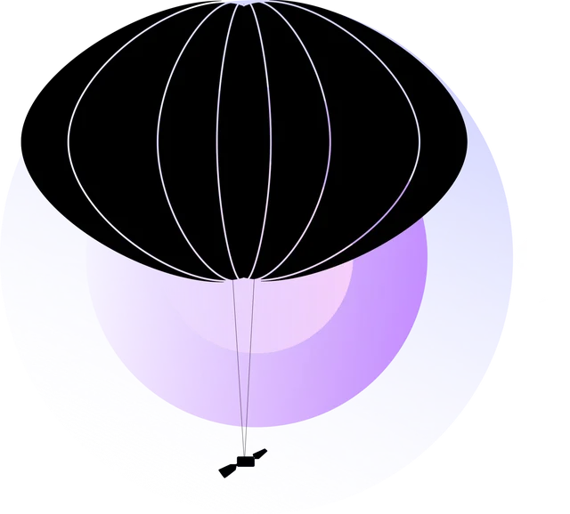
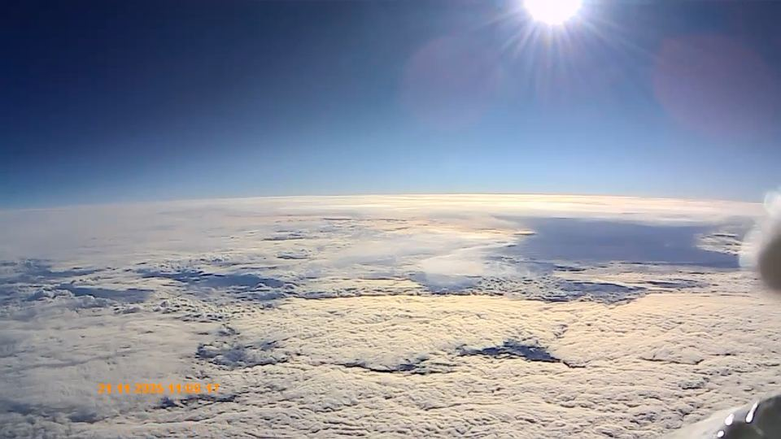
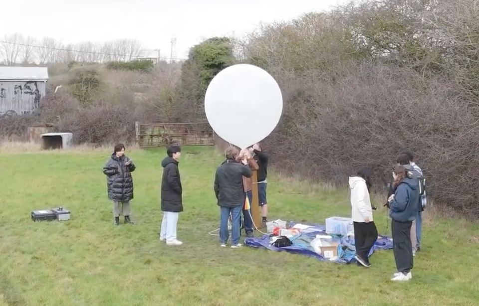
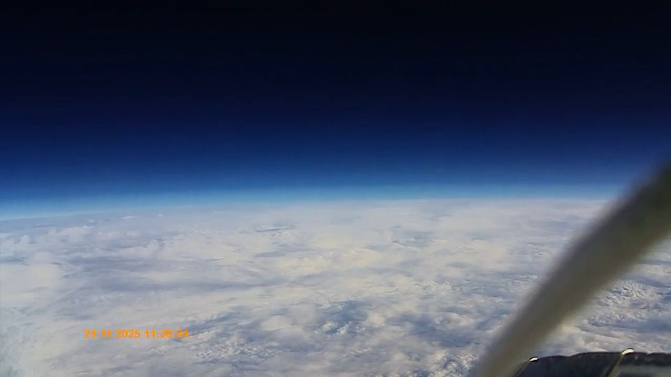
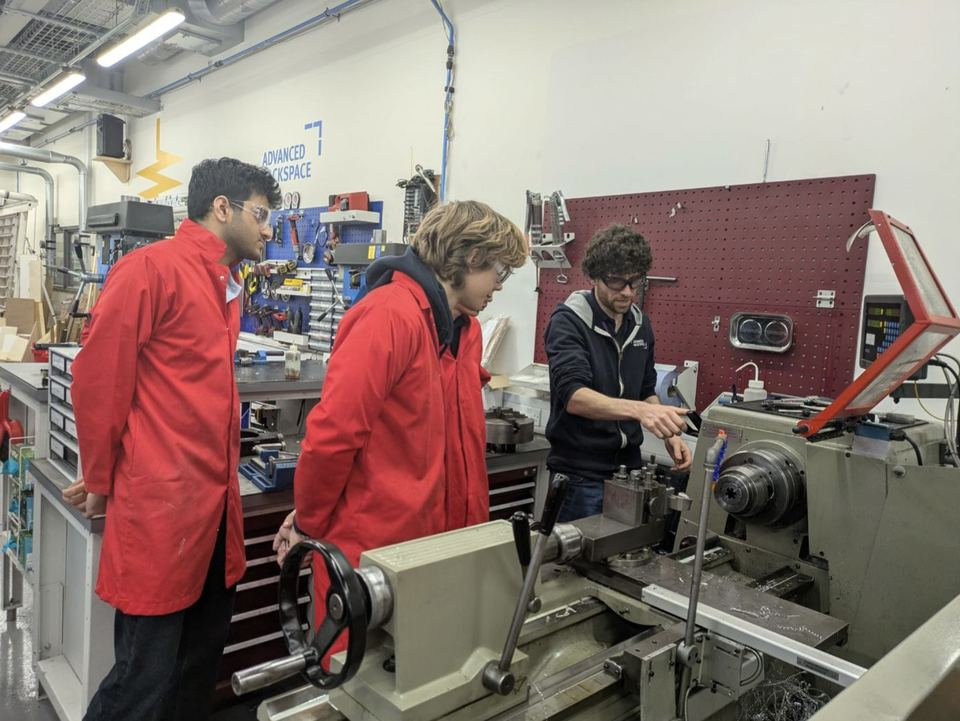
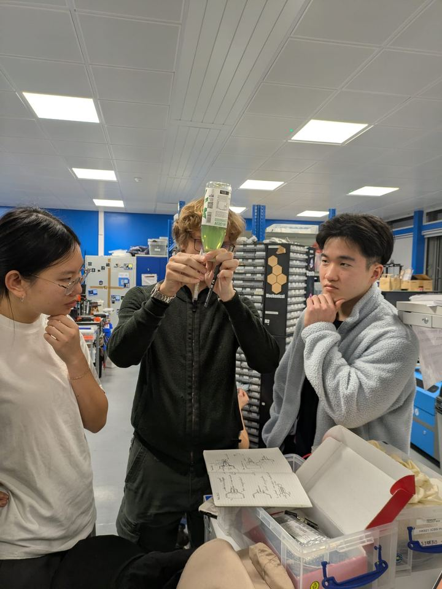

Project Stratus
High altitude ballooning
We build and launch high altitude weather balloons, and we're adding release valves, ballast and an AI agent so the balloon can go up and down to catch winds blowing in different directions. The idea is it can then stay roughly in one place (within about 100 km of launch) instead of drifting off, and we can get it back instead of letting it burst.
If it works it's a cheap alternative to low orbit satellites for weather monitoring and Earth observation.
Stratus flight, 7 February 2026



The AI bit
Reinforcement learning. The balloon can only control its height, so the model has to learn which altitude to sit at to ride the right wind. So far we have a basic 3D atmosphere environment and a trained 1D agent. Next is adding real limits (ballast, helium) and more dimensions.
On board
Temperature sensor, barometer, battery monitor and GPS over I2C, microSD and a LoRaWAN antenna over serial, a UV sensor over analog, plus a camera, power bank, insulated box and parachute. Code is on our GitHub.
We're also looking at spotting "ship tracks" (clouds made by ship exhaust) to help with fuel sulphur regulation.
What you'd be doing
Electronics and soldering, radio, GPS, RL, and lots of trips to the Advanced Hackspace (lathe, waterjet, TIG welding) for the valve. Then you get to test it all at 30 km, -50°C and less than 1% of an atmosphere.


Join
Fridays 6-8pm, CAGB 749. Launches roughly once a term. Meeting times and rooms get posted in the Stratus group chat in the ICSS WhatsApp community.
Balloon Commander: Lucas Cheung. Balloon Admiral: Mikhail Ischenko.